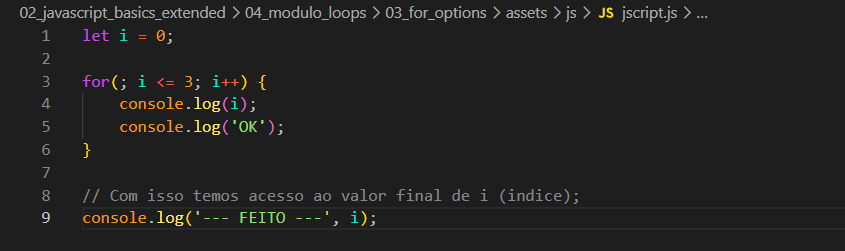
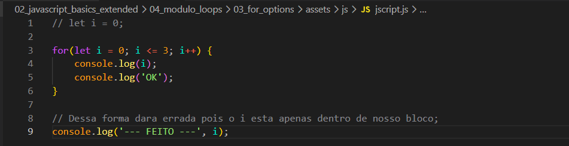
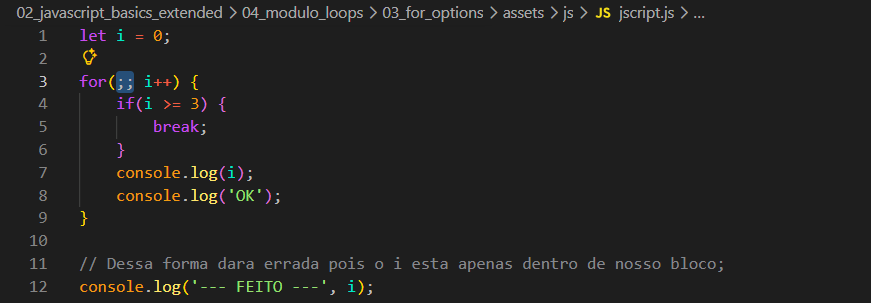
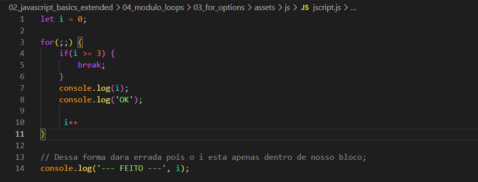

For Option
Intro
Entendendo melhor o laco de repeticao.
Entendendo melhor o laco de repeticao.
let i = 0; sendo ele de onde queremos comecar.
Quando utilizamos o i como escopo global, nossa variavel i tambem podera ser acessada fora de nosso laco de repeticao. Exemplo de uso:

Dessa forma nosso codigo funcionara normal e ainda conseguiremos usar o valor final de i fora de nosso bloco for. Porem isso so funciona se nossa variavel i do for estiver como escopo global.

Assim como mudamos o i. Tambem podemos alterar a forma de uso de nossa condional dentro do escopo local. Ficando da seguinte forma:

Dessa forma passamos nossa condicional do for, para dentro de nosso bloco.
step (i++)
Podemos fazer o mesmo tambem com nosso step. Ficando da seguinte forma:

Isso e para levarmos em consideracao que as vezes a gente pode ter acesso a variaveis externas de nosso laco de repeticao e iterar sobre ela e utilizarmos da maneira que precisar, adicionando a logica necessaria.
Correcao de explicacao